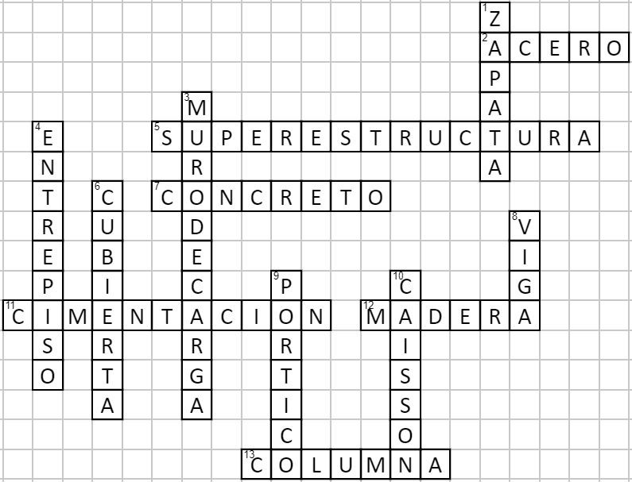
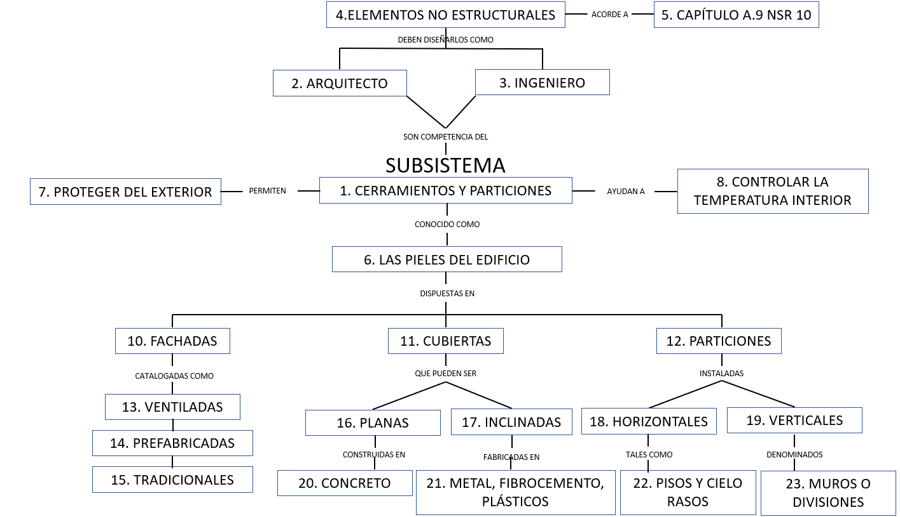

GUÍA PARA EL DISEÑO DE ESPACIOS ACADÉMICOS EN MODALIDAD VIRTUAL Apreciado autor, por favor diligencie esta ficha a partir de las indicaciones que se dan dentro del documento las cuales sirven para la elaboración de ambientes de aprendizaje en modalidad e-learning (virtual). Nota 1: toda la información en gris dentro de cada celda a lo largo de la guía corresponde a explicaciones de lo que se debe escribir, por lo que la puede borrar una vez comprenda el objetivo de cada segmento. Nota 2: antes de iniciar la creación del plan de formación, puede acudir a los ejemplos de formulación en el siguiente recurso: clic para ver
METODOLOGÍA DE APRENDIZAJE DEL ESPACIO ACADÉMICO (redacción dirigida al estudiante) Bienvenidos al espacio académico teórico-práctico denominado “Tecnología de la Construcción”, en este espacio comprenderán el papel del desarrollo tecnológico en las diferentes etapas de un proyecto de edificación – diseño, construcción y mantenimiento –, a partir de una metodología basada en el desarrollo de un proyecto a lo largo del espacio académico, que contará con el apoyo de las sesiones virtuales en las cuales se propondrán actividades que permitan la simulación virtual de los subsistemas componentes de un edificio y la comprensión del todo como un sistema. Se recomienda el uso de un software de fácil manejo como SketchUp, enviar los avances del desarrollo del proyecto en las fechas establecidas para poder hacer una retroalimentación adecuada, y participar activamente en los encuentros virtuales expresando sus inquietudes frente al ejercicio práctico y a los recursos teóricos de apoyo. PRESENTACIÓN DEL ESPACIO ACADÉMICO (No superar 1 página) (redacción dirigida al estudiante)La tecnología de la construcción es un tema amplio y fascinante donde los avances se dan de manera ininterrumpida. Cada día son más los sistemas constructivos desarrollados para solucionar el mismo problema, siempre buscando la eficiencia y la estandarización de componentes, apoyados en tecnologías de representación y visualización avanzadas. Por ello, este espacio académico le permitirá reconocer las posibilidades de materialización de una edificación desde el momento mismo en el que el proyecto se concibe, de modo que el estudiante comprenda que el éxito de un proyecto inicia con un correcto diseño de todas sus partes, mediante el manejo de las herramientas necesarias acorde al contexto donde se lleve a cabo su construcción. El espacio académico contempla tres unidades. La unidad 1 abordará el concepto de sistema para entender su planificación, diseño y construcción como un todo compuesto de partes interrelacionadas. La segunda unidad, tratará en más detalle las partes que lo componen, es decir, los subsistemas, observándolos desde diferentes posibilidades de materialización. La tercera, y última unidad, abordará los temas de mantenimiento y certificaciones sostenibles dentro de las cuales se puede enmarcar un proyecto de construcción. Todo lo anterior, revisado bajo la perspectiva del desarrollo tecnológico y su aplicación, para generar una reflexión crítica del cómo y con qué se construye.
A QUIEN SE DIRIGE EL ESPACIO ACADÉMICO
| |||||||||||||||||||||||||||||||||||||||||||||||||||||||||||||||||||||||||||||||||||||||||||||||||||||||||
UNIDAD DIDÁCTICA 1: EL EDIFICIO COMO SISTEMA | |||||||||||||||||||||||||||||||||||||||||||||||||||||||||||||||||||||||||||||||||||||||||||||||||||||||||
Descripción general | |||||||||||||||||||||||||||||||||||||||||||||||||||||||||||||||||||||||||||||||||||||||||||||||||||||||||
Resumen | En esta unidad se abordará el concepto de sistema para entender un proyecto como un todo compuesto de partes interrelacionadas. Se observarán todas las fases, previas a la etapa de construcción, que se deben surtir para planificar y gestionar la realización de un edificio. Con base en lo anterior, podrá comprender que todas las partes que conforman al sistema -el edificio- juegan un papel trascendental y están concatenadas para lograr el propósito para el cual fue planeado. | ||||||||||||||||||||||||||||||||||||||||||||||||||||||||||||||||||||||||||||||||||||||||||||||||||||||||
Preguntas orientadoras | ¿Por qué se puede afirmar que el edificio es un sistema? ¿Cuáles son las partes o subsistemas que componen una edificación? ¿Cómo funciona un edificio? | ||||||||||||||||||||||||||||||||||||||||||||||||||||||||||||||||||||||||||||||||||||||||||||||||||||||||
Detalles de la Unidad | |||||||||||||||||||||||||||||||||||||||||||||||||||||||||||||||||||||||||||||||||||||||||||||||||||||||||
ACTIVIDADES DE APRENDIZAJE (redacción dirigida al estudiante) | |||||||||||||||||||||||||||||||||||||||||||||||||||||||||||||||||||||||||||||||||||||||||||||||||||||||||
ACTIVIDAD 1: Analogía del cuerpo humano versus una edificación. | |||||||||||||||||||||||||||||||||||||||||||||||||||||||||||||||||||||||||||||||||||||||||||||||||||||||||
¿Qué vamos a lograr? Comprende la edificación como un sistema, un conjunto de elementos jerárquicos e interactuantes, a partir del reconocimiento de las actividades que se desarrollan durante la planificación del proyecto de construcción. | |||||||||||||||||||||||||||||||||||||||||||||||||||||||||||||||||||||||||||||||||||||||||||||||||||||||||
¿Cómo lo vamos a lograr? Un edificio es un conjunto de partes interactuantes entre sí, tal como sucede en el cuerpo humano, todas cumplen un papel fundamental único e irremplazable. Por tanto, realizar una comparación entre cómo funciona el cuerpo humano y cómo funciona un edificio, es un ejercicio que permite entender, de un modo sistémico, las relaciones entre dichas partes. En esta actividad, cada grupo de trabajo deberá realizar una infografía donde, a partir de una analogía entre el cuerpo humano y la edificación que se asignó a cada grupo para el desarrollo del ejercicio práctico del semestre se comprendan las funciones de cada subsistema y se determinen las relaciones entre estos. Tenga en cuenta los siguientes pasos para la realización de esta actividad: 1. El trabajo se desarrolla con los grupos de trabajo (parejas). 2. Asistir o ver la grabación del encuentro virtual de la semana 1. 3. Realice una búsqueda rápida en internet para ver cuáles son los sistemas que existen en el cuerpo humano. 4. Revisen la información planimétrica de la edificación que le ha correspondido para el ejercicio práctico del curso. Identifique las diferentes partes que lo componen acorde a lo explicado en el encuentro virtual. 5. Discutan entre los integrantes del grupo acerca de cómo, uno y otro -el cuerpo y el edificio-, resisten las cargas, los vientos, los sismos; cómo se protege del clima, del sol directo, de la lluvia; cómo se acondicionan los espacios para manejar la temperatura, la humedad; cómo se crean vínculos estrechos entre los diferentes subsistemas y en qué grado alguno es más importante. 6. Creen una infografía en Canva o Genially donde se plantee una analogía entre el cuerpo humano y la edificación en estudio, de modo que describa las relaciones e interacciones entre las partes que lo componen. 7. Suban el archivo a la plataforma Moodle en el espacio destinado a la actividad 1. | |||||||||||||||||||||||||||||||||||||||||||||||||||||||||||||||||||||||||||||||||||||||||||||||||||||||||
¿Cómo lo vamos a evaluar?
Nota: La escala de la rúbrica es estándar para todos los espacios académicos. | |||||||||||||||||||||||||||||||||||||||||||||||||||||||||||||||||||||||||||||||||||||||||||||||||||||||||
Información para el equipo de producción de la DEE | |||||||||||||||||||||||||||||||||||||||||||||||||||||||||||||||||||||||||||||||||||||||||||||||||||||||||
Herramientas de la plataforma virtual (Marque con una X):
Herramientas web externas a la plataforma [Puede consultar algunas herramientas en https://h5p.org/h5p/embed/123342] Indique si utilizará alguna____________ | |||||||||||||||||||||||||||||||||||||||||||||||||||||||||||||||||||||||||||||||||||||||||||||||||||||||||
Lecturas complementarias No hay lecturas para esta actividad. | |||||||||||||||||||||||||||||||||||||||||||||||||||||||||||||||||||||||||||||||||||||||||||||||||||||||||
ACTIVIDAD 2: Procedimientos de diseño y construcción de una edificación. | |||||||||||||||||||||||||||||||||||||||||||||||||||||||||||||||||||||||||||||||||||||||||||||||||||||||||
¿Qué vamos a lograr? Comprende la edificación como un sistema, un conjunto de elementos jerárquicos e interactuantes, a partir del reconocimiento de las actividades que se desarrollan durante la planificación del proyecto de construcción. | |||||||||||||||||||||||||||||||||||||||||||||||||||||||||||||||||||||||||||||||||||||||||||||||||||||||||
¿Cómo lo vamos a lograr? En Colombia, existe una normativa que rige el proceso de diseño y construcción de edificaciones. Recibe el nombre de Reglamento Colombiano de Construcción Sismo Resistente NSR-10, la cual es la versión vigente, aunque actualmente esté en revisión. Como constructor, es imprescindible que sepa que exista y comprenda cuál es el proceso que allí se plantea para llevar a buen término una construcción. Esto complementará lo visto en el primer encuentro virtual con relación a la planificación y gestión de un proyecto de edificación. Teniendo en cuenta la información recibida en el encuentro virtual y, luego de hacer la lectura del prefacio de la NSR 10, cada grupo de trabajo realizará dos mapas mentales que le permitan comprender, de manera gráfica, todas las etapas y los pasos que deben tenerse en cuenta en el momento de diseñar y construir un proyecto. Tenga en cuenta los siguientes pasos para la realización de esta actividad: Producto 1: mapa mental prefacio NSR-10 1. El trabajo se desarrolla con los grupos de trabajo (parejas). 2. Asistir o ver la grabación del encuentro virtual de la semana 1. 3. Realicen, individualmente, la lectura del prefacio del Reglamento Colombiano de Construcción Sismo Resistente, incluyendo el apéndice 1. Puede encontrarlo en el siguiente enlace: https://www.andi.com.co/Uploads/Reglamento_colombiano_construccion_sismo_resistente_636536179523160220.pdf 4. Creen un mapa mental en Lucidchart o Creately con la síntesis de los puntos que cita el apéndice 1 y que describen el procedimiento de diseño y construcción de una edificación. 5. Suban el archivo a la plataforma Moodle en el espacio destinado a la actividad 2. Producto 2: mapa mental de estudios y diseños necesarios en un proyecto de construcción. 1. El trabajo se desarrolla con los grupos de trabajo (parejas). 2. Asistir o ver la grabación del encuentro virtual de la semana 1. 3. Revise la información planimétrica de la edificación que le ha correspondido para el ejercicio práctico del curso. Identifique las diferentes partes que lo componen acorde a lo explicado en el encuentro virtual. 4. Discutan entre los integrantes del grupo acerca de cuáles estudios y diseños de los tratados en el encuentro virtual o de los enunciados en la NSR-10, o inclusive de aquellos que usted autónomamente haya investigado, se debieron realizar para obtener como resultado la planimetría del ejercicio práctico del curso. 5. Cree un mapa mental en lucidchart o creately donde se enuncien los estudios y diseños que hayan determinado se debieron realizar para esta edificación, teniendo en cuenta de plantear su secuencialidad acorde al análisis que hayan realizado en el punto 4. 6. Suban el archivo a la plataforma Moodle en el espacio destinado a la actividad 2. | |||||||||||||||||||||||||||||||||||||||||||||||||||||||||||||||||||||||||||||||||||||||||||||||||||||||||
¿Cómo lo vamos a evaluar?
Nota: La escala de la rúbrica es estándar para todos los espacios académicos | |||||||||||||||||||||||||||||||||||||||||||||||||||||||||||||||||||||||||||||||||||||||||||||||||||||||||
Información para el equipo de producción de la DEE | |||||||||||||||||||||||||||||||||||||||||||||||||||||||||||||||||||||||||||||||||||||||||||||||||||||||||
Elija la Herramienta de la plataforma virtual para el diseño de la actividad (Marque con una X):
| |||||||||||||||||||||||||||||||||||||||||||||||||||||||||||||||||||||||||||||||||||||||||||||||||||||||||
Lecturas complementarias No hay lecturas complementarias | |||||||||||||||||||||||||||||||||||||||||||||||||||||||||||||||||||||||||||||||||||||||||||||||||||||||||
UNIDAD DIDÁCTICA 2: LOS SUBSISTEMAS DE LA EDIFICACIÓN | |||||||||||||||||||||||||||||||||||
Descripción general | |||||||||||||||||||||||||||||||||||
Resumen | En esta unidad se estudiarán a fondo las partes -subsistemas- que componen una edificación, indagando sobre las posibilidades de materialidad para cada una de ellas. Si bien se abordarán la mayor cantidad de ejemplos posibles durante los encuentros virtuales, este es un tema demasiado amplio y de actualización tecnológica permanente que requiere que cada uno de ustedes sea un actor curioso y vivencie todo lo que sucede a su alrededor, en tanto espacio construido se refiere, para continuar con su aprendizaje de manera autónoma y constante. Con base en lo anterior, usted afianzará su conocimiento acerca del con qué y cómo funciona una edificación, respondiendo a unas necesidades (determinantes) específicas que hacen parte de la etapa de gestión del proyecto. Además, se adentrará en la representación tridimensional de los subsistemas para aprender haciendo y permitiendo una visualización de las interacciones entre los subsistemas analizados. | ||||||||||||||||||||||||||||||||||
Preguntas orientadoras | ¿Cuál es la función principal de la estructura de una edificación? ¿Cuántas particiones o cerramientos pueden diseñarse para un proyecto? ¿Qué es lo que permite condiciones mínimas de confort y saneamiento dentro de una construcción? | ||||||||||||||||||||||||||||||||||
Detalles de la Unidad | |||||||||||||||||||||||||||||||||||
ACTIVIDADES DE APRENDIZAJE (redacción dirigida al estudiante) | |||||||||||||||||||||||||||||||||||
ACTIVIDAD 3: El esqueleto de la edificación. | |||||||||||||||||||||||||||||||||||
¿Qué vamos a lograr? Identifica los subsistemas que componen la edificación para proponer alternativas de materialidad con base en el uso de tecnologías apropiadas. | |||||||||||||||||||||||||||||||||||
¿Cómo lo vamos a lograr? Existen varias alternativas para materializar el subsistema portante -esqueleto- de una edificación. En Colombia, es usual encontrar edificaciones construidas con base en el uso del concreto, el acero, la mampostería y la madera. Es importante reconocer cada una de las partes que componen la estructura de una edificación para luego determinar cómo se materializa. Con base en la planimetría del proyecto, y buscando la interacción de los participantes del curso, se plantea el siguiente foro donde cada grupo de trabajo compartirá una imagen tridimensional dibujada técnicamente, respondiendo a la siguiente pregunta: ¿Identifica los elementos constitutivos del subsistema portante del proyecto práctico y puede establecer los materiales, secciones, y conexiones entre estos? Tenga en cuenta los siguientes pasos para la realización de esta actividad: 1. El trabajo se desarrolla con los grupos de trabajo (parejas). 2. Asistir o ver la grabación del encuentro virtual de la semana 4. 3. Revisen y discutan la información planimétrica de la edificación que le ha correspondido para el ejercicio práctico del curso. Identifiquen los diferentes elementos verticales y horizontales que componen la estructura portante de la edificación. 4. Realicen una axonometría de una parte del subsistema portante y tomen una fotografía sobre la cual escriban los nombres de cada uno de los componentes de la estructura, para compartirlo en el foro como respuesta a la pregunta que orienta la discusión. 5.Comenten las demás imágenes que presentan los demás compañeros de curso, haciendo aportes constructivos y asertivos. | |||||||||||||||||||||||||||||||||||
¿Cómo lo vamos a evaluar?
Nota: La escala de la rúbrica es estándar para todos los espacios académicos. | |||||||||||||||||||||||||||||||||||
Información para el equipo de producción de la DEE | |||||||||||||||||||||||||||||||||||
Elija la herramientas de la plataforma virtual (Marque con una X):
Herramientas web externas a la plataforma [Puede consultar algunas herramientas en https://h5p.org/h5p/embed/123342] Indique si utilizará alguna____________ | |||||||||||||||||||||||||||||||||||
Lecturas complementarias No hay lecturas para esta actividad. | |||||||||||||||||||||||||||||||||||
¿Qué vamos a lograr? Identifica los subsistemas que componen la edificación para proponer alternativas de materialidad con base en el uso de tecnologías apropiadas. | |||||||||||||||||||||||||||||||||||
¿Cómo lo vamos a lograr? La información planimétrica de un proyecto es una representación bidimensional de un proyecto de construcción. Sin embargo, es importante que a partir de ella se pueda realizar una imagen volumétrica de cada uno de sus componentes. Actualmente, en el ámbito de la construcción, es el modelo 3d el recurso fundamental para la coordinación técnica de un diseño. Se construirá entonces el modelo 3d de la estructura del ejercicio práctico que le correspondió a cada grupo mediante el uso de Sketchup, herramienta de fácil manejo para iniciarse en el mundo del software de representación. Tenga en cuenta los siguientes pasos para la realización de esta actividad: 1. El trabajo se desarrolla en los grupos de trabajo (parejas). 2. Asistir o ver la grabación del encuentro virtual de la semana 4. 3. Realicen el modelo 3d en Sketchup de la estructura portante del ejercicio práctico que el docente le facilitó en la semana 1: 3.1 Utilicen las capas o etiquetas para diferenciar cada tipo de elemento. 3.2 Manejen las unidades del archivo consistentes con las observadas en los planos. 3.3 Aplique colores o materiales a cada una de las etiquetas para simular la materialidad. 4. Suban al espacio de la actividad en Moodle un video, realizado en ScreenCast-o-Matic, donde describan, con base en el modelo realizado, los elementos verticales y horizontales, el proceso constructivo y los materiales del sistema portante del ejercicio práctico. | |||||||||||||||||||||||||||||||||||
¿Cómo lo vamos a evaluar?
Nota: La escala de la rúbrica es estándar para todos los espacios académicos | |||||||||||||||||||||||||||||||||||
Información para el equipo de producción de la DEE | |||||||||||||||||||||||||||||||||||
Elija la Herramienta de la plataforma virtual para el diseño de la actividad (Marque con una X):
| |||||||||||||||||||||||||||||||||||
Lecturas complementarias No hay lecturas complementarias | |||||||||||||||||||||||||||||||||||
ACTIVIDAD 5: Las pieles de la edificación. | |||||||||||||||||||||||||||||||||||
¿Qué vamos a lograr? Identifica los subsistemas que componen la edificación para proponer alternativas de materialidad con base en el uso de tecnologías apropiadas. | |||||||||||||||||||||||||||||||||||
¿Cómo lo vamos a lograr? Así como en el cuerpo humano la piel tiene, al menos, tres capas, en las edificaciones sucede algo similar. La fachada, la cubierta, las carpinterías, las divisiones internas y los cielos rasos, son diferentes capas que se disponen para cumplir funciones específicas. Por lo tanto, es importante reconocerlas y entender cómo están compuestas y cuál es su finalidad. Con base en la planimetría del proyecto, y buscando la interacción de los participantes del curso, se plantea el siguiente foro donde cada grupo de trabajo compartirá una imagen tridimensional dibujada técnicamente, respondiendo a la siguiente pregunta: ¿Identifica las diferentes capas de la piel de la edificación y establece los materiales, tipos, formas, y conexiones de estas a la estructura principal? Tenga en cuenta los siguientes pasos para la realización de esta actividad: 1. El trabajo se desarrolla con los grupos de trabajo (parejas). 2. Asistir o ver la grabación del encuentro virtual de la semana 7. 3. Revisen y discutan la información planimétrica de la edificación que le ha correspondido para el ejercicio práctico del curso. Identifiquen las diferentes pieles de la edificación tanto externa como internamente. 4. Realicen una axonometría y un corte por fachada de una parte del proyecto y tomen una fotografía sobre la cual escriban los nombres de cada una de las partes que identifiquen como cerramientos y particiones de la edificación, para compartirlo en el foro como respuesta a la pregunta que orienta la discusión. 5. Comenten las demás imágenes que presentan los demás compañeros de curso, haciendo aportes constructivos y asertivos. | |||||||||||||||||||||||||||||||||||
¿Cómo lo vamos a evaluar?
Nota: La escala de la rúbrica es estándar para todos los espacios académicos. | |||||||||||||||||||||||||||||||||||
Información para el equipo de producción de la DEE | |||||||||||||||||||||||||||||||||||
Elija la herramientas de la plataforma virtual (Marque con una X):
Herramientas web externas a la plataforma [Puede consultar algunas herramientas en https://h5p.org/h5p/embed/123342] Indique si utilizará alguna____________ | |||||||||||||||||||||||||||||||||||
Lecturas complementarias No hay lecturas para esta actividad. | |||||||||||||||||||||||||||||||||||
ACTIVIDAD 6: Subsistema cerramientos y particiones de una edificación | |||||||||||||||||||||||||||||||||||
¿Qué vamos a lograr? Identifica los subsistemas que componen la edificación para proponer alternativas de materialidad con base en el uso de tecnologías apropiadas. | |||||||||||||||||||||||||||||||||||
¿Cómo lo vamos a lograr? Continuando con el desarrollo del modelo 3d del proyecto, y una vez finalizada la estructura, se desarrollará la construcción virtual de los cerramientos y particiones. En este caso, primero se comprenderán cuáles y de qué tipo las hay en el ejercicio práctico para luego modelarlas y establecer cómo se vinculan a la estructura. Pues es esta última, la que brinda el apoyo a todos los demás componentes constructivos que se han planeado en el diseño. Se construirá entonces el modelo 3d de las diferentes pieles presentes en el ejercicio práctico que le correspondió a cada grupo mediante el uso de Sketchup, herramienta de fácil manejo para iniciarse en el mundo del software de representación. Tenga en cuenta los siguientes pasos para la realización de esta actividad: 1. El trabajo se desarrolla con los grupos de trabajo (parejas). 2. Asistir o ver la grabación del encuentro virtual de la semana 7. 3. Realicen el modelo 3D en Sketchup de la fachada, carpinterías, cielos rasos, cubierta, particiones interiores y toda otra partición o revestimiento que identifiquen en la planimetría del ejercicio práctico que el docente le facilitó en la semana 1: 3.1 Utilicen las capas o etiquetas para diferenciar cada tipo de elemento. 3.2 Manejen las unidades del archivo consistentes con las observadas en los planos. 3.3 Aplique colores o materiales a cada una de las etiquetas para simular la materialidad. 4. Suban al espacio de la actividad en Moodle un video, realizado en ScreenCast-o-Matic, donde describan, con base en el modelo realizado, los elementos verticales y horizontales, el proceso constructivo y los materiales del sistema portante del ejercicio práctico. | |||||||||||||||||||||||||||||||||||
¿Cómo lo vamos a evaluar?
Nota: La escala de la rúbrica es estándar para todos los espacios académicos | |||||||||||||||||||||||||||||||||||
Información para el equipo de producción de la DEE | |||||||||||||||||||||||||||||||||||
Elija la Herramienta de la plataforma virtual para el diseño de la actividad (Marque con una X):
| |||||||||||||||||||||||||||||||||||
Lecturas complementarias No hay lecturas complementarias | |||||||||||||||||||||||||||||||||||
ACTIVIDAD 7: Las instalaciones dentro de un edificio. | |||||||||||||||||||||||||||||||||||
¿Qué vamos a lograr? Identifica los subsistemas que componen la edificación para proponer alternativas de materialidad con base en el uso de tecnologías apropiadas. | |||||||||||||||||||||||||||||||||||
¿Cómo lo vamos a lograr? Los seres humanos tenemos algo más de una decena de aparatos o sistemas dentro del cuerpo que permiten conducir fluidos, eliminarlos, procesar alimentos, crear energía, regular funciones, transportar información, etc. Para un proyecto de construcción, se deben diseñar estos mismos componentes a los que denominamos sistemas técnicos. Si bien no es una tarea de una sola disciplina, como constructores debemos conocerlos, entenderlos y materializarlos. Con base en la planimetría del proyecto, y buscando la interacción de los participantes del curso, se plantea el siguiente foro donde cada grupo de trabajo compartirá una imagen tridimensional dibujada técnicamente, respondiendo a la siguiente pregunta: ¿Identifica cuáles sistemas técnicos debieron diseñarse para el correcto funcionamiento de la edificación, comprendiendo el concepto de coordinación técnica de instalaciones y su relación con el planeamiento de la estructura principal y de los cerramientos y particiones? Tenga en cuenta los siguientes pasos para la realización de esta actividad: 1. El trabajo se desarrolla con los grupos de trabajo (parejas). 2. Asistir o ver la grabación del encuentro virtual de la semana 10. 3. Revisen y discutan la información planimétrica de la edificación que le ha correspondido para el ejercicio práctico del curso. Identifiquen las diferentes pieles de la edificación tanto externa como internamente. 4. Consulten información de diferentes fuentes para entender cómo se estructuran y se materializan. 5. Realicen una axonometría de una parte del proyecto con los esquemas de los sistemas técnicos (recorridos verticales y horizontales cada uno en un color diferente) y tomen una fotografía sobre la cual escriban los nombres de cada uno de estos, para compartirlo en el foro como respuesta a la pregunta que orienta la discusión. 6. Comenten las demás imágenes que presentan los demás compañeros de curso, haciendo aportes constructivos y asertivos. | |||||||||||||||||||||||||||||||||||
¿Cómo lo vamos a evaluar?
Nota: La escala de la rúbrica es estándar para todos los espacios académicos. | |||||||||||||||||||||||||||||||||||
Información para el equipo de producción de la DEE | |||||||||||||||||||||||||||||||||||
Elija la herramientas de la plataforma virtual (Marque con una X):
Herramientas web externas a la plataforma [Puede consultar algunas herramientas en https://h5p.org/h5p/embed/123342] Indique si utilizará alguna____________ | |||||||||||||||||||||||||||||||||||
Lecturas complementarias No hay lecturas para esta actividad. | |||||||||||||||||||||||||||||||||||
ACTIVIDAD 8: Subsistemas técnicos de la edificación | |||||||||||||||||||||||||||||||||||
¿Qué vamos a lograr? Identifica los subsistemas que componen la edificación para proponer alternativas de materialidad con base en el uso de tecnologías apropiadas. | |||||||||||||||||||||||||||||||||||
¿Cómo lo vamos a lograr? Se han trabajado los subsistemas portantes, de cerramientos y particiones. Con estos dos la arquitectura general de la edificación ya está terminada. No obstante, es un edificio que no funciona para lo cual fue diseñado pues no se puede habitar si no permiten unas condiciones de confort mínimas para que los seres humanos lo utilicemos. Todo proyecto, en principio, requiere fluido eléctrico e hidráulico como condiciones básicas. Luego de ello hay que pensar en otra serie de instalaciones que suministren gas, que permitan un control remoto de la iluminación y algunos dispositivos, que permitan tener puntos de voz y datos, que permitan hacer transporte vertical de personas, etc. Se construirá entonces el modelo 3d de uno de los sistemas técnicos -instalaciones- del ejercicio práctico, el cual será asignado en el encuentro virtual de la semana 10. Deberán modelarlo mediante el uso de Sketchup, herramienta de fácil manejo para iniciarse en el mundo del software de representación. Tenga en cuenta los siguientes pasos para la realización de esta actividad: 1. El trabajo se desarrolla con los grupos de trabajo (parejas). 2. Asistir o ver la grabación del encuentro virtual de la semana 10. 3.Realicen el modelo 3d en Sketchup de un sistema técnico (acordado con el docente y en lo posible, con la mayoría de sus componentes) del proyecto práctico que le asignó el docente en el encuentro virtual de la semana 1: 3.1 Utilicen las capas o etiquetas para diferenciar cada tipo de elemento. 3.2 Manejen las unidades del archivo consistentes con las observadas en los planos. 3.3 Aplique colores o materiales a cada una de las etiquetas para simular la materialidad. 4. Suban al espacio de la actividad en Moodle un video, realizado en ScreenCast-o-Matic, donde describan, con base en el modelo realizado, los elementos verticales y horizontales que lo componen, el proceso constructivo y los materiales del sistema portante del ejercicio práctico. 5. Diríjase a la plataforma, sección Actividades de afianzamiento, y realice las evaluaciones que se proponen (no generan nota). Evaluación subsistema portante
Solucione el siguiente crucigrama:
 Pistas: 1. Elemento superficial usado en la cimentación. 2. Material que surge de la mezcla de hierro y carbono más otros minerales para otorgarle propiedades específicas. 3. Elemento estructural lineal con el que se conforman sistemas estructurales. 4. Componente horizontal de un subsistema portante que define el número de pisos. 5. Toda la parte del subsistema portante que se construye sobre la cimentación. 6. Componente del subsistema portante que se construye en el último piso y puede diferir geométricamente de los entrepisos. 7. Material compuesto por una mezcla de cemento, arena, grava, agua y aditivos. 8. Elemento estructural dispuesto horizontalmente. 9. Elemento estructural que se forma por la unión rígida entre columnas y vigas. 10. Elemento constructivo generalmente de forma cilíndrica usado en cimentaciones profundas. 11. Parte del subsistema portante que soporta todas las cargas de la edificación para transmitirlas al suelo. 12. Material natural a partir del cual se pueden obtener secciones estructurales. 13. Elemento estructural dispuesto verticalmente.
Completar el siguiente mapa conceptual acorde a lo visto en este subtema.  Nota: colocar debajo del mapa los 23 términos que se observan (sin el número) para que el estudiante organice el mapa y lo complete. Evaluación de cierre Integre ejercicios (preguntas, preferiblemente cerradas) con el cual se validen los elementos trabajados a lo largo del OVA. Relacione el número de los términos que aparecen en la columna de la izquierda con su definición.
| |||||||||||||||||||||||||||||||||||
¿Cómo lo vamos a evaluar?
Nota: La escala de la rúbrica es estándar para todos los espacios académicos | |||||||||||||||||||||||||||||||||||
Información para el equipo de producción de la DEE | |||||||||||||||||||||||||||||||||||
Elija la herramientas de la plataforma virtual (Marque con una X):
| |||||||||||||||||||||||||||||||||||
Lecturas complementarias No hay lecturas complementarias | |||||||||||||||||||||||||||||||||||
UNIDAD DIDÁCTICA 3: LA VIDA ÚTIL DE LA EDIFICACIÓN | ||||||||||||
Descripción general | ||||||||||||
Resumen | Una vez ejecutado un proyecto de construcción, comienza su funcionamiento y el diseño desde haber tenido como premisa la durabilidad y sostenibilidad de este en el tiempo. Por ello, el cuánto permanecerá sin requerir gastos en mantenimiento y la manera en la que optimizará el uso de los recursos necesarios para la habitabilidad de los ocupantes, dependen, enormemente, de la etapa de gestión y planificación. En la etapa de construcción se tomarán otro tipo de medidas para mitigar el impacto durante su materialización. Por tanto, es necesario comenzar a entender, desde una etapa temprana de la formación como constructor, las estrategias de diseño sostenible que dejen la menor huella ecológica de una actividad que consume recursos en gran medida y que usa materiales, muchos de ellos con un proceso de obtención contaminante, de modo que se adquieran conocimientos sobre cómo mejorar las técnicas constructivas para optimizar los diseños en pro de una vida útil de la edificación de cara a ser más amigables con la naturaleza. | |||||||||||
Preguntas orientadoras | ¿Cuáles son los criterios de sostenibilidad que se pueden aplicar como estrategias proyectuales en la etapa de planificación de una construcción? ¿Cómo se pueden utilizar los materiales para reducir el impacto ambiental en su proceso de obtención y uso en edificaciones? ¿Por qué es importante tener claro que toda edificación requiere mantenimiento? | |||||||||||
Detalles de la Unidad | ||||||||||||
ACTIVIDADES DE APRENDIZAJE (redacción dirigida al estudiante) | ||||||||||||
ACTIVIDAD 9: Criterios y estrategias sostenibles | ||||||||||||
¿Qué vamos a lograr? Reconoce el ciclo de vida útil de una edificación para incluir decisiones de diseño sostenible y sustentable que reduzcan el costo de operación y mantenimiento de la construcción. | ||||||||||||
¿Cómo lo vamos a lograr? Después de la construcción de una edificación, esta continua demandando recursos para su funcionamiento y, además, requerirá algunas intervenciones para mantener su infraestructura en buen estado. Es por esto que desde el diseño inicial se deben adoptar algunas estrategias para que el diseño y la construcción sean sostenibles, no solo en una etapa inicial sino durante la vida útil de la edificación. Con base en esta premisa se estudiarán algunas de las entidades que otorgan los sellos de construcción sostenible y los requisitos para tal fin. Tenga en cuenta los siguientes pasos para la realización de esta actividad: 1. El trabajo se desarrolla con los grupos de trabajo (parejas). 2. Asistir o ver la grabación del encuentro virtual de la semana 14. 3. Realice una búsqueda rápida en Internet para indagar con mayor profundidad sobre las certificaciones ambientales que puede recibir una construcción. Pueden consultar estos links como fuente primaria:
4. Revisen la información planimétrica de la edificación que le ha correspondido para el ejercicio práctico del curso y organice las estrategias de diseño sostenible que permitan reducir el costo de operación durante la vida útil de la edificación. 5. Discutan entre los integrantes del grupo acerca de cómo con estas estrategias de diseño sostenible, se hace un óptimo uso de los recursos que se requieren para el funcionamiento diario y el confort de las personas que habitarán la edificación. Asimismo, piensen en cuáles serían los periodos de mantenimiento que podría llegar a tener la edificación. 6. Creen una infografía en Canva o Genially donde se describan las estrategias de diseño sostenible que establecieron como aplicables al ejercicio práctico, e incluyan una línea de tiempo en la cual se coloquen los hitos de los periodos de tiempo en los que la construcción requeriría mantenimiento integral o en alguno de sus subsistemas. 7. Suban el archivo a la plataforma Moodle en el espacio destinado a la actividad 9. | ||||||||||||
¿Cómo lo vamos a evaluar?
Nota: La escala de la rúbrica es estándar para todos los espacios académicos. | ||||||||||||
Información para el equipo de producción de la DEE | ||||||||||||
Elija la herramientas de la plataforma virtual (Marque con una X):
Herramientas web externas a la plataforma [Puede consultar algunas herramientas en https://h5p.org/h5p/embed/123342] Indique si utilizará alguna____________ | ||||||||||||
Lecturas complementarias No hay lecturas para esta actividad. | ||||||||||||
(OBLIGATORIO) Evaluación final Actividad 10 |
1. Una edificación puede entenderse como un _________ sistema compuesto de tres _________ que son jerárquicos e interactuantes entre sí y con el _______. a. Sistema. b. Subsistema. c. Entorno. 2. La razón de ser de un sistema estructural es _______________ de la edificación brindándole a los ocupantes seguridad durante la vida útil de la edificación. a. Proporcionar la forma. b. Soportar y transmitir las cargas. c. Mantener el equilibrio. d. Garantizar la estabilidad. 3. En Colombia, no somos ajenos a la búsqueda de construcciones cada vez más amigables con el ambiente, en ese sentido, la entidad de nuestro país encargada de otorgar el sello que certifica que un proyecto de construcción ha aplicado coherentemente estrategias de diseño y construcción sostenible es: a. La Cámara Colombiana de la Construcción. b. La Federación Colombiana de Gestión Humana. c. El Consejo Colombiano de Construcción Sostenible. d. El Consejo Empresarial Colombiano para el Desarrollo Sostenible. 4. La madera es un material renovable y con un potencial de uso significativamente alto con relación a los materiales tradicionales de construcción con procesos extractivos y de fabricación mucho más contaminantes. De hecho, son cada vez más los sistemas de construcción y también aumentan en número las construcciones de mediana altura que permite construir. En Colombia, particularmente, se le tiene aún mucha reserva y no se usa masivamente porque se considera como un material: a. Poco resistente, con una durabilidad muy baja y que aumenta considerablemente los costos de mantenimiento. b. Altamente costoso, con pocas cualidades estéticas y que no tiene una producción local industrializada. c. Muy rígido, con pocas opciones de secciones estructurales en el mercado y sin permiso de explotación. d. De bajo costo, aplicable solo como revestimiento de fachadas y con poca oferta de productos en el mercado. 5. Los dos insumos imprescindibles para el inicio de la etapa de diseño arquitectónico de una edificación son ______________________; estos garantizan que la implantación del proyecto sea adecuada y que el diseño del sistema portante tenga insumos suficientes para tomar decisiones sobre la geometría de la estructura. a. Diseño estructural y estudio de suelos. b. Estudios de suelos y levantamiento topográfico. c. Levantamiento topográfico y diseño estructural. 6. La técnica en construcción se refiere al _________, está en función de las habilidades de las personas que ejecutan una actividad de obra; por su parte, la tecnología depende del _________, pensando en las herramientas y equipos necesarios materializar las ideas que se han plasmado en la planimetría del proyecto. a. ¿Cómo se hace? b. ¿Con qué se hace? 7. La edificación, así como el cuerpo humano, posee diferentes capas de pieles con funciones determinadas. Algunas están destinadas a separar el exterior del interior, como por ejemplo ___________________ que incluyen una cavidad de aire con corriente convectiva para controlar la temperatura interior; y otras, en el interior como __________________________ permiten separar los espacios, brindando diferentes ambientes y cualidades térmicas y acústicas en función de las necesidades particulares del programa arquitectónico. a. Fachadas en mampostería. b. Fachadas prefabricadas. c. Fachadas ventiladas. d. Revestimientos de muros y pisos. e. Pisos técnicos y plafones. f. Muros divisorios y cielo rasos. 8. Empareje los diferentes aparatos o sistemas del cuerpo humano con su equivalente al subsistema de edificación. a. Subsistema portante – Sistema óseo. b. Instalaciones hidrosanitarias – Sistema circulatorio. c. Instalaciones eléctricas – Sistema nervioso. d. Instalaciones de ACC y extracción mecánica – Sistema respiratorio. 9. Las estrategias de diseño sostenible, que permiten construcciones más amigables con el ambiente y reducir la huella ecológica durante la vida útil, buscan fundamentalmente. a. Optimizar el uso de los recursos en los diferentes procesos reduciendo los costos de operación. b. Reducir el costo directo de la construcción, aunque haya que realizar mantenimientos periódicos. c. Utilizar únicamente materiales que sean renovables, como la madera, reduciendo costos. d. Hacer más habitables las construcciones, aunque el costo de operación sea más elevado. 10. El Reglamento Colombiano de Construcción Sismo Resistente es, básicamente, una normativa de diseño estructural dirigida únicamente a los ingenieros civiles especializados en cálculo estructural, sin vincular ni responsabilizar a ningún otro profesional con relación a diseños y ejecución de los proyectos de construcción. a. Falso. b. Verdadero. 11. Los subsistemas de cerramientos y particiones y de instalaciones técnicas, se apoyan sobre la estructura, transmiten su carga muerta a esta y por tanto deben vincularse mediante el diseño de anclajes que eviten que se desprendan de los puntos donde se fijan cuando se ven sometidos a fuerzas horizontales como el sismo o el viento. El Reglamento Colombiano de Construcción Sismo Resistente describe todos los requisitos que deben cumplir en el título: A. C capítulo 7. B. D capítulo 8. C. A capítulo 9. D. F capítulo 4. 12. Si a usted como constructor, le solicitan realizar el diseño de una construcción destinada a uso de oficinas en Bucaramanga, donde las luces oscilan entre los 7.5m a los 12m; a su vez, le piden que los asesore sobre el sistema portante que les puede ofrecer mayores ventajas en términos de tiempo de ejecución y reducción de cargas muertas para ahorrar en la cimentación, usted optaría por recomendarles un sistema. a. De pórticos resistentes a momentos en concreto reforzado. b. Combinado compuesto por pórticos en acero y muros en mampostería reforzada. c. Combinado en acero estructural mezclando pórticos con y sin diagonales. d. De muros de carga en mampostería estructural de cavidad reforzada. 13. Usted administra una obra de construcción, y durante el proceso de ejecución deciden hacer un cambio en el sistema de fachada para obtener ahorros energéticos durante la operación del edificio. Sabe muy bien que esto traería beneficios desde el punto de vista del confort, y le piden que esta modificación de los diseños y los procesos de obra sean optimizados para reducir la huella ecológica pues como efecto de estas decisiones puede. a. Reducir el tiempo de ejecución de varias actividades de obra lo cual reduce los costos totales. b. Recibir beneficios tributarios que reducen costos, junto con un sello de sostenibilidad. c. Eliminar el uso de sistemas mecánicos de ventilación reduciendo el costo de operación. d. Implementar sistemas automatizados de iluminación y ventilación controlados remotamente. 14. El constructor, sin haber participado en el proceso de diseño, pero acorde a lo descrito en la normativa sismo resistente vigente, puede recibir sanciones civiles y penales cuando bajo su responsabilidad se ejecutan elementos constructivos que no han sido correctamente diseñados y omite dar sus observaciones previo el inicio de la obra. a. Falso. b. Verdadero. 15. En la construcción que está llevando a cabo, dirigida a materializar un edificio de unidades de vivienda, se incluyó la implementación de la domótica como estrategia complementaria a los recursos pasivos. Esta moderna herramienta les permitirá a los residentes, entre otras cosas. a. Controlar los consumos de agua potable pues permite reducir los caudales acordes a las necesidades. b. Eliminar las instalaciones de calefacción que usan gas, cambiándolos a unos sistemas fotovoltaicos. c. Reutilizar las aguas grises mediante la automatización de todo el sistema de suministro hidráulico d. Optimizar el uso de luz artificial buscando el aprovechamiento de la energía y un confort óptimo. |
Anexo A
Herramientas y Recursos integrados en la plataforma educativa Moodlerooms.
La siguiente lista de herramientas y recursos están disponibles dentro de la plataforma educativa MoodleRooms (adquirida por la Universidad de La Salle) como parte de las funcionalidades que tiene el docente para adecuar su espacio virtual en términos de actividades de aprendizaje (herramientas) y recursos de apoyo (recursos).
Herramientas para el desarrollo de actividades de aprendizaje | ||
Asistencia | El módulo de actividad de asistencia permite a un profesor tomar asistencia en clase y a los estudiantes ver su propio registro de asistencia. | |
Base de datos | El módulo de actividad de base de datos permite a los participantes crear, mantener y buscar información en un repositorio de registros. La estructura de las entradas la define el profesor según una lista de campos. Los tipos de campo incluyen casilla de verificación, botones de radio, menú desplegable, área de texto, URL, imagen y archivo cargado. | |
Chat | La actividad chat permite a los participantes tener una discusión en formato texto de manera sincrónica en tiempo real. | |
Consulta | El módulo Consulta permite al profesor hacer una pregunta especificando las posibles respuestas posibles. | |
Cuestionario | La actividad Cuestionario permite al profesor diseñar y plantear cuestionarios con preguntas tipo opción múltiple, verdadero/falso, coincidencia, respuesta corta y respuesta numérica | |
Encuesta | El módulo Encuesta le permite construir encuestas empleando diversos tipos de preguntas, con el propósito de recopilar información de sus usuarios. | |
Foro | El módulo de actividad foro permite a los participantes tener discusiones asincrónicas, es decir discusiones que tienen lugar durante un período prolongado de tiempo. | |
Foro avanzado | El módulo de actividad de foros avanzados permite a los participantes realizar debates asincrónicos, es decir, los debates se realizan durante un período prolongado. | |
Glosario | El módulo de actividad glosario permite a los participantes crear y mantener una lista de definiciones, de forma similar a un diccionario, o para recoger y organizar recursos o información. | |
Herramienta Externa | El módulo de actividad de herramienta externa les permite a los estudiantes interactuar con recursos educativos y actividades alojadas en otros sitios de internet. Por ejemplo, una herramienta externa podría proporcionar acceso a un nuevo tipo de actividad o de materiales educativos de una editorial. | |
HotPot | El módulo de actividad H5P le permite crear contenido interactivo como videos interactivos, conjuntos de preguntas, arrastrar y soltar preguntas, multi-elección preguntas, Presentaciones y mucho más. | |
Interactive Content | El módulo de actividad H5P le permite crear contenido interactivo como videos interactivos, conjuntos de preguntas, arrastrar y soltar preguntas, multi-elección preguntas, Presentaciones y mucho más. | |
Lección | La actividad lección permite a un profesor presentar contenidos y/ o actividades prácticas de forma interesante y flexible. Un profesor puede utilizar la lección para crear un conjunto lineal de páginas de contenido o actividades educativas que ofrezcan al alumno varios itinerarios u opciones. | |
Paquete SCORM | Un paquete SCORM es un conjunto de archivos que se empaquetan conforme a una norma estándar para los objetos de aprendizaje. El módulo de actividad SCORM permite cargar y añadir a los cursos paquetes SCORM o AICC como archivos Zip. | |
Webex | El módulo Cisco Webex permite que profesores y estudiantes se reúnan en una clase virtual mediante el uso de video conferencias. Estas sesiones también se pueden grabar para visualizarlas y revisarlas fuera de línea. | |
Taller | El módulo de actividad taller permite la recopilación, revisión y evaluación por pares del trabajo de los estudiantes. Los estudiantes pueden enviar cualquier contenido digital (archivos), tales como documentos de procesador de texto o de hojas de cálculo y también pueden escribir el texto directamente en un campo empleando un editor de texto (dentro de Moodle). | |
Tarea | El módulo de Tareas permite a un profesor evaluar el aprendizaje de los alumnos mediante la creación de una tarea a realizar que luego revisará, valorará y calificará. Los alumnos pueden presentar cualquier contenido digital (archivos), como documentos de texto, hojas de cálculo, imágenes, audio y vídeos entre otros. Alternativamente, o como complemento, la tarea puede requerir que los estudiantes escriban texto directamente en un campo utilizando el editor de texto. Una tarea también puede ser utilizada para recordar a los estudiantes tareas del "mundo real" que necesitan realizar y que no requieren la entrega de ningún tipo de contenido digital. | |
Wiki | El módulo de actividad wiki le permite a los participantes añadir y editar una colección de páginas web. Un wiki puede ser colaborativo, donde todos pueden editarlo, o puede ser individual, donde cada persona tiene su propio wiki que solamente ella podrá editar. | |
Recursos de apoyo | ||
Archivo | El módulo Archivo permite a los profesores proveer un Archivo como un recurso del curso. Cuando sea posible, el archivo se mostrará dentro del interface del curso; si no es el caso, se le preguntará a los estudiantes si quieren descargarlo. El recurso Archivo puede incluir archivos de soporte, por ejemplo, una página HTML puede tener incrustadas imágenes u objetos Flash. | |
Carpeta | El recurso Carpeta permite al profesor mostrar un grupo de archivos relacionados dentro de una única carpeta. Se puede subir un archivo comprimido (zip) que se descomprimirá (unzip) posteriormente para mostrar su contenido, o bien, se puede crear una carpeta vacía y subir los archivos dentro de ella. | |
Etiqueta | El módulo etiqueta permite insertar texto y elementos multimedia en las páginas del curso entre los enlaces a otros recursos y actividades. Las etiquetas son muy versátiles y pueden ayudar a mejorar la apariencia de un curso si se usan cuidadosamente. | |
Libro | El módulo libro permite crear material de estudio de múltiples páginas en formato libro, con capítulos y subcapítulos. El libro puede incluir contenido multimedia, así como texto y es útil para mostrar grandes volúmenes de información repartido en secciones. | |
Página | El recurso Página permite a los profesores crear una página web mediante el editor de textos. Una Página puede mostrar texto, imágenes, sonido, vídeo, enlaces web y código incrustado (como por ejemplo los mapas de Google) entre otros. | |
Paquete de contenido IMS | Un paquete de contenidos IMS permite mostrar dentro del curso paquetes de contenidos creados conforme a la especificación IMS CONTENT PACKAGING. | |
URL | El recurso URL permite que el profesor pueda proporcionar un enlace de Internet como un recurso del curso. Todo aquello que esté disponible en línea, como documentos o imágenes, puede ser vinculado; la URL no tiene por qué ser la página principal de un sitio web. La dirección URL de una página web en particular puede ser copiada y pegada por el profesor, o bien, este puede utilizar el selector de archivo y seleccionar una URL desde un repositorio, como Flickr, YouTube o Wikimedia (dependiendo de qué repositorios están habilitados para el sitio). | |